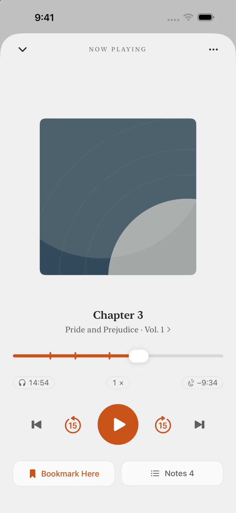

EarMemo › Offline player, no account
An offline audio player for iPhone with no account, no server, and no tracking
EarMemo plays audio files stored on your device without internet access, including on first launch. There is no account, no server to hold one, no analytics, no crash reporting, and no third-party SDK. Optional Wi-Fi transfer stays on your local network; Apple StoreKit handles purchases and restores.
What "local-first" means here, specifically
The phrase is used loosely. In EarMemo it means every one of these is true at once:
- Your audio files stay in the app's own folder on the device.
- Playback position, bookmarks, notes and listening statistics are stored on the device.
- There is no sign-in, because there is no account system to sign in to.
- There is no telemetry, no analytics event, no crash reporter, no remote config, no feature flag fetched from a server.
- There are no third-party SDKs in the binary.
- Your data follows your own iCloud device backup if you have one enabled — that is Apple's backup of your phone, not an EarMemo cloud service.
How to verify it yourself, without trusting the marketing
A privacy claim you cannot check is just a nicer-sounding promise. Three checks anyone can run in a few minutes:
- Airplane mode. Turn it on before the first launch and use the app normally — import, play, take notes, read your stats. Everything works. An app that phones home tends to break or nag in airplane mode.
- The App Store privacy label. Open EarMemo's App Store page and look at App Privacy. It reads Data Not Collected. That label is a declaration Apple holds developers to.
- iOS network permission. EarMemo asks for local network access only when you turn on Wi-Fi transfer — because that genuinely needs it. If an app that claims to be offline asks for network access at launch, that tells you something.

Optional local network transfer, described honestly
Wi-Fi transfer starts a small web server on your phone so you can drag files in from a desktop browser, and announces it over Bonjour so the computer can find it. Two things follow from that, and both are worth knowing: while it is on, other devices on the same network can open the page and see the file list; and nothing it does crosses your router. Use it on a network you control, turn it off afterwards. Details in transferring audio without iTunes.
Where EarMemo sits among the privacy-minded players
Several iOS audio apps lead with privacy, and they mean different things by it. The useful question is what kind of listening you do.
| If you listen to… | You want | Because |
|---|---|---|
| Files you already downloaded or own | EarMemo | It plays local files only, with no catalogue; optional Wi-Fi transfer uses the local network. |
| Podcasts you subscribe to by RSS | A private podcast client | Fetching a feed requires a network connection. EarMemo has no feed subscriptions. |
| A library you want mirrored across Apple devices | An iCloud-syncing player | EarMemo has no cross-device sync of its own. |
| A self-hosted server library | An Audiobookshelf or Plex client | EarMemo does not connect to servers, self-hosted ones included. |
Why the app is built this way
Once an app has a server, it acquires an appetite: an account to identify you, analytics to justify the roadmap, a subscription to pay for the servers, and a recommendation feed to raise engagement. EarMemo is a one-time purchase with no server precisely so none of that machinery ever gets a reason to exist. The absence of features here is the product, not a stage it has not reached yet.
When EarMemo is the wrong choice
- You want your library on every device. There is no cross-device sync. Your data rides along with Apple's own device backup, and that is all.
- You want to subscribe to podcasts inside the app. RSS needs a network connection; EarMemo has no feed catalogue and plays files you downloaded elsewhere.
- You want to audit the source. EarMemo is not open source. The airplane-mode test and the App Store privacy label are what you can check from outside.
- You want a streaming or self-hosted-server client. Not this app — it does not connect to media servers.
Questions people actually ask
Is there an iPhone audio player that works completely offline?
Yes. EarMemo plays audio stored on the device without internet access, including on first launch. It has no account, app server, analytics or third-party SDKs. Optional Wi-Fi transfer stays on the local network; Apple StoreKit handles purchases and restores.
Does EarMemo require an account?
No. There is no sign-in and no account system. You install the app and use it; nothing identifies you to the developer.
Does EarMemo collect any data?
No. Its App Store privacy label reads Data Not Collected. There is no telemetry, no crash reporting, no remote configuration and no advertising.
How can I check the app really is offline?
Enable airplane mode before you first open it, then import a local file, play, take notes and read your stats. These features work offline; Wi-Fi transfer and purchases require connectivity.
Does it sync my library between iPhone and iPad?
No. There is no EarMemo cloud sync. Your data is included in your own iCloud device backup if you have that enabled, but there is no service keeping two devices in step.
Is it free?
It is free to download and free to keep using within a permanent quota. EarMemo Pro is a single one-time purchase — no subscription, no ads, no account.
Try it with your own files
EarMemo is free to download and free to keep using within its quota. EarMemo Pro is a single one-time purchase — no subscription, no ads, no account.